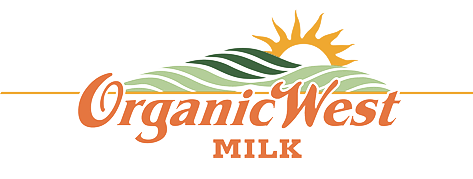
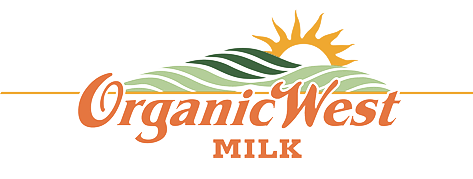

Call to learn more (559) 802-3202

About Us
Visalia Dairy Company was founded in 2015 on the principle of providing top quality, fresh dairy products for wholesale, retail and co-packing services. We are conveniently located in the heart of California’s Central Valley in Tulare County. Visalia Dairy Company has partnered with the Visalia Unified School District to create an internationally recognized certificate program administered by the Institute of Food Technologists (IFT) to encourage local students to successfully enter the dairy industry.
With the team we have in place here at Visalia Dairy Company, we are confident we can provide our customers with the leading experts in industry, overall quality products and above and beyond customer experience.
Visalia Dairy company is unique in the sense that we are not segmented to being a large dairy processing facility, nor small; rather our company falls right in the middle between these two. We are proud to say that, because of this, we are able to fill the gap for the customers who are being overlooked because of their size. Being able to fill this gap has given us a unique opportunity to be successful.
Our Dairy Source
 

Visalia Dairy company is teamed up with a conventional milk co-operative, Pacific Gold Milk Producers. For organic milk, we have teamed up with Organic West Milk. Both organizations are located in Ripon, California. As co-packers, we at Visalia Dairy Company pride ourselves on the fact that our milk is derived from reliable sources. Pacific Gold Milk Producers and Organic West Milk ensure fresh, quality milk by providing rBST and Hormone free milk to its customers.
The Visalia Team
Daniel Quinlan, Diary Scientist
Dan has been working in the dairy industry for over thirty years. His experience has been primarily in the manufacture of yogurt, ice cream and cheese. Dan grew up in Ireland and has worked in the United Kingdom and Canada. After spending many years in various management positions, he now works in specialty yogurt and fermentation product manufacturing.
Mark D. Acevedo, General Manager
Mark has been managing business sales teams and P&L’s for over thirty years and has worked primarily in the financial services sector. Mark has maintained a strong familiarity with the dairy business, and his expertise lies in business development, customer relations and managing businesses.
Leonard Vandenburg,
Dairy Industry / Milk Specialist
Leonard has been operating in the Dairy Industry for over thirty years. Not only does Leonard have extensive knowledge in dairy processing, but he also an expert in Dairy Farming and Consulting in the industry. Leonard manages a conventional milk cooperative and organic milk business, both of which are located in Ripon, California.
Mike Ramirez, Plant Manager
Mike has extensive knowledge of over 15 years in the Dairy Industry. Previous to Mike’s position as Plant Manager, he worked as a Production Manager and Foreman in multiple cheese and milk plants. Mike obtained his Manufacturing Consortium Front-line Supervisory Training and Certificate at the College of the Sequoias (COS) in Visalia, California. Mike also has his Sampler’s & Weigher’s and Pasteurizer’s Licenses.
Jesse Mendes, Production Supervisor
Jesse grew up on the family dairy and has been milking cows since he was ten years old. Jesse learned the importance of having a strong work ethic at a young age and it provided him with great dedication to his craft. After working at the family Dairy, he decided to take a job as an Operator at other milk and cheese processing plants in the area. Jesse also has his Pasteurizer’s and Sampler’s & Weigher’s Licenses.
Melanie Sholander, Quality Assurance Supervisor
Melanie graduated California Polytechnic State University, San Luis Obispo, where she received a B.S. in Food Science. Melanie took Dairy Sciences, Microbiology and Chemistry in college and found her love for dairy after her internship where they manufactured butter, cream and milk powders.
Raul Avila, Maintenance Supervisor
Raul worked in the Maintenance department at various cheese and drinkable-yogurt plants. Raul has fifteen years of experience in the dairy industry and specializes in both repair and maintenance. Raul also attended Universal Technical Institute (UTI) in Phoenix, Arizona where he received his certificate in Refrigeration Technology.